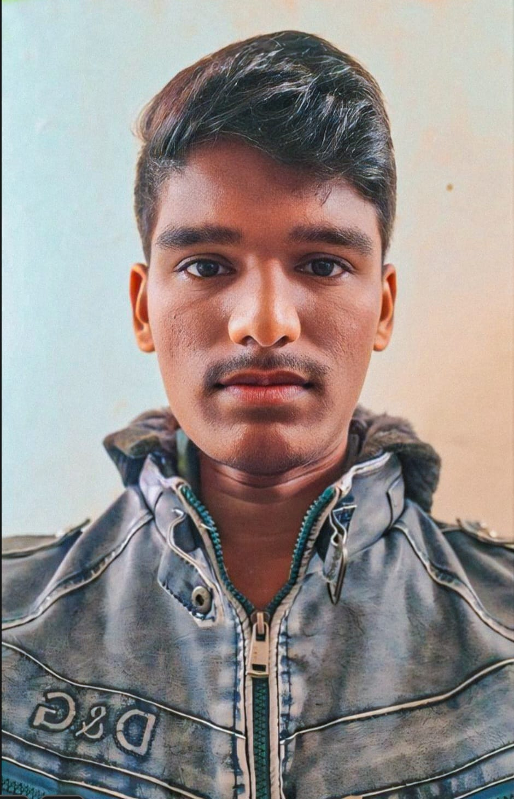

About Me
- 
-
I'm Mohit Katariya,a second-year Computer Science student at IIT Indore, interested in database management and data structures. I enjoy solving problems and learning how to build better and faster systems. I'm passionate about technology and always looking for ways to apply my skills to real-world projects. I'm excited to keep learning and growing in this field
Experience
-
As a second-year Computer Science student at IIT Indore, I am actively building my skills in programming, database management, and data structures through my coursework. While I do not have formal job experience yet, I am eager to apply my knowledge in practical settings. I am looking for internship opportunities to gain hands-on experience and further develop my abilities in the tech industry
Skills
- HTML
- CSS
- C++
- JavaScript
- DatabaseManagement
- MySQL
Projects
-
Project 1
I'm currently working on a DBMS project called "Supermarket Management System." This project involves designing and implementing a database to manage inventory, sales, and customer data for a supermarket. The goal is to create an efficient system that tracks stock levels, records transactions, and generates reports to help streamline supermarket operations. Through this project, I'm gaining hands-on experience with database design, SQL queries, and data management.
-
Project 2
I worked on a Line-Follower robot as a team member, in my first year course. That robot was designed for help the blind peoples by its continuos beap sound during walking. Such that a blind person can follow that robot.
Get in Touch
Want to collaborate or discuss a project? Reach out to me!